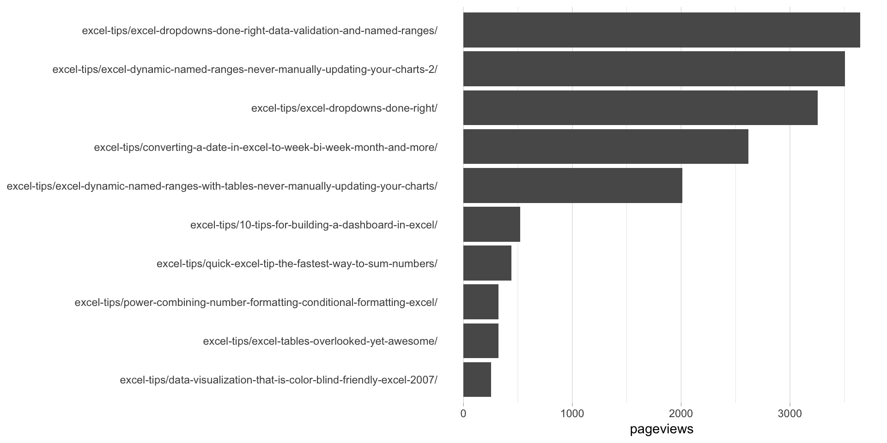

“Simple” may be a bit of a misnomer here. This is a “simple-in-what-we’re-trying-to-do” example if not a “simple-to-actually-implement” one.
Note: This example uses the unbox() function from the jsonlite package. If you do not already have jsonlite installed (or if you’re not sure), run install.packages("jsonlite") in the console before running this example.
This example pulls the top 10 pages for the last thirty days, for visits where the entry page included the word “Intelligence”. We’ll do this by building a segment dynamically rather than referencing a segment ID. Where this can come in handy is if you have a script where you want to work through a range of small little tweaks to one segment and re-pull the data. You don’t want to build each segment in the web interface and then hardcode all those IDs! We may add an example for doing that later, but we’re doing to keep this very simple for now.
This returns the exact same results as these Apply Segment by Segment ID example. It just doesn’t require any work in the Adobe Analytics web interface to return the results.
Be sure you’ve completed the steps on the Initial Setup page before running this code.
For the setup, we’re going to load a few libraries, load our specific Adobe Analytics credentials, and then authorize with Adobe.
# Load the necessary libraries. The 'typical' way to do this is with a series of
# 'library([library name])' calls. The use of the pacman package, though, adds a
# check that will install any missing packages before then loading them.
if (!require("pacman")) install.packages("pacman")
pacman::p_load(RSiteCatalyst,
tidyverse,
jsonlite) # Needed for unbox() in examples with inline segments
# Load the username, shared secret, and report suite ID
username <- Sys.getenv("ADOBE_API_USERNAME")
secret <- Sys.getenv("ADOBE_API_SECRET")
# Authorize Adobe Aalytics.
SCAuth(username, secret)
# Set the RSID and the date range. If you want to, you can swap out the Sys.getenv()
# call and just replace that with a hardcoded value for the RSID. And, the start
# and end date are currently set to choose the last 30 days, but those can be
# hardcoded as well.
rsid <- Sys.getenv("ADOBE_RSID")
start_date <- Sys.Date() - 31 # 30 days back from yesterday
end_date <- Sys.Date() - 1 # YesterdayIf that all runs with just some messages but no errors, then you’re set for the next chunk of code: pulling the data.
This gets built up in what can feel a bit cumbersome. Essentially (but not necessarily intuitively), Adobe Analytics segments can have containers within containers. R has an analog: lists. A list can have a list as an element. So, we use lists to define inline segments.
# Create the actual segment object that we're going to use in the query. See ?segment_ga4()
# for details.
my_segment <- list(container = list(type = unbox("visits"),
rules = data.frame(name = "Entry Page Includes 'excel'",
element = "entrypage",
operator = "contains",
value = "Intelligence")))
# Pull the data. See ?QueueRankes() for details on the arguments available. Note that
# we're using segment.inline as an argument here.
aa_data <- QueueRanked(rsid,
date.from = start_date,
date.to = end_date,
metrics = "pageviews",
elements = "page",
top = 10,
segment.inline = my_segment)
# Go ahead and do a quick inspection of the data that was returned. This isn't required,
# but it's a good check along the way.
head(aa_data)| name | url | pageviews | segment.id | segment.name |
|---|---|---|---|---|
| Search Discovery, Inc. - A Digital Intelligence Company | https://www.searchdiscovery.com | 1589 | segment1 | inline segment |
| Search Discovery, Inc. - A Business Intelligence and Analytics Company | http://searchdiscover.staging.wpengine.com | 581 | segment1 | inline segment |
| Open Positions - Search Discovery | https://www.searchdiscovery.com/open-positions | 527 | segment1 | inline segment |
| Digital Marketing, Analytics and Business Intelligence Jobs at Search Discovery | https://www.searchdiscovery.com/about/careers | 495 | segment1 | inline segment |
| About Our Digital Intelligence Company | Search Discovery | https://www.searchdiscovery.com/about | 430 | segment1 | inline segment |
| Digital Intelligence Solutions | Search Discovery | https://www.searchdiscovery.com/solutions | 323 | segment1 | inline segment |
In order to keep the order in the bar chart, we need to convert the page column to be a factor. We’ll reverse the order so that, when displayed in a bar chart, they’ll be in descending order.
# Convert page to be a factor
aa_data$name <- factor(aa_data$name,
levels = rev(aa_data$name))This won’t be the prettiest bar chart, but let’s make a horizontal bar chart with the data. Remember, in ggplot2, a horizontal bar chart is just a normal bar chart with coord_flip().
# Create the plot. Note the stat="identity"" (because the data is already aggregated) and
# the coord_flip(). And, I just can't stand it... added on the additional theme stuff to
# clean up the plot a bit more.
gg <- ggplot(aa_data, mapping = aes(x = name, y = pageviews)) +
geom_bar(stat = "identity") +
coord_flip() +
theme_light() +
theme(panel.grid.major.y = element_blank(),
panel.grid.minor.y = element_blank(),
panel.border = element_blank(),
axis.title.y = element_blank(),
axis.ticks.y = element_blank())
# Output the plot. You *could* just remove the "gg <-" in the code above, but it's
# generally a best practice to create a plot object and then output it, rather than
# outputting it on the fly.
print(gg)
This site is a sub-site to dartistics.com